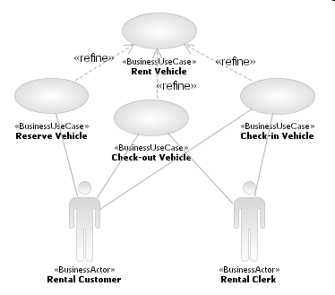

The high-level business use-case identified in the step Analyze Business Use-Case Model is refined based on
the criteria described in the Main Description. In the example, we identified that Rent Vehicle was a
long-running process, with some checkpoints at which value was delivered to the business actors -- giving the refined
business use-cases shown below, Reserve Vehicle, Check-out Vehicle and Check-in Vehicle.

It is conceivable that another level of refinement could be needed, but it is preferable to produce any finer-grained
description using a Business Use-Case Realization, typically in the form of an activity
diagram, in Task: Business Use-Case Analysis. The action nodes in the activity diagram
represent another level of process decomposition, as described in Concept: Business Process Decomposition, and illustrated below for the business
use-case Reserve Vehicle.
These lower-level business use-cases will be further detailed in Task:
Detail a Business Use Case.
The refinement of a business use-case into lower-level business use-cases may reveal additional non-functional
requirements (for example, performance, regulatory or security requirements) that must be captured in the Artifact: Supplementary Business Specification.
|